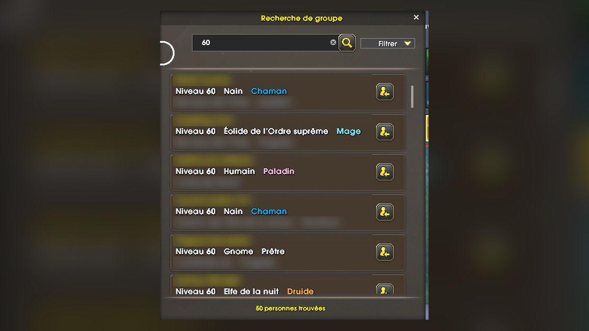
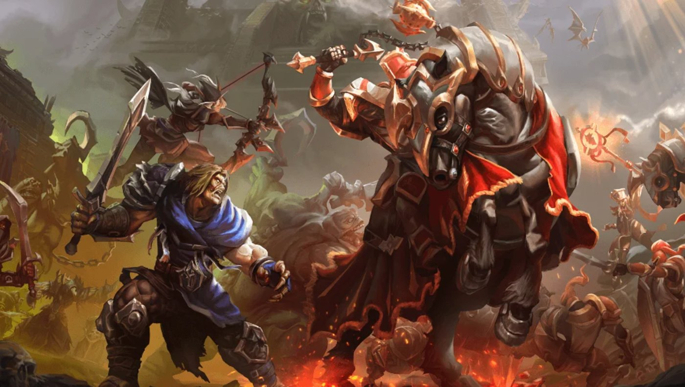

Toutes les news

Les bonus de monde disparaissent aux écrans de chargement ?
Bénédiction du chef de guerre et Puissance de Hurlevent perdues après un zeppelin ou une déconnexion : des joueurs le signalent, Blizzard n'a rien confirmé.
Vidéo : la Cité submergée en entier
Cinquième vidéo sur la chaîne Mygale TV : le nouveau donjon sous-marin des niveaux 35 à 42, avec ses 6 boss jusqu'à Min'loth le Serpent.
Vidéo : Uldaman en entier
Quatrième vidéo sur la chaîne Mygale TV : la quête extérieure puis les 8 boss jusqu'à Archaedas, avec un chapitre par boss.

Builds niveau 60 mis à jour pour les 27 spés
Tous les builds vérifiés sur le patch 1.60.1.71037. Les six spés touchées par les refontes de novembre (voleur, Armes, Fureur, Élémentaire) ont un nouveau build.
Vidéo : les Souilles de Tranchebauge en entier
Troisième vidéo sur la chaîne Mygale TV : le donjon des niveaux 37 à 46 avec ses 5 boss, et des chapitres pour aller droit au but.
Vidéo : les Profondeurs de Brassenoire en entier
Deuxième vidéo sur la chaîne Mygale TV : le donjon des niveaux 22 à 28 jusqu'à Aku'mai, avec ses 5 boss.

Champs de bataille bloqués en Europe, et la quête hebdo passe à Rochenoire
Des joueurs européens n'entrent plus en champ de bataille ni ne gagnent d'honneur, sans réponse de Blizzard. Et la quête d'or de la semaine se fait maintenant à Rochenoire.

Nouveau : les armes utilisables par classe
Un tableau clair des armes que chaque classe peut porter dans Forever, avec les nouveautés (haches du voleur, deux mains du chaman) et tous les maîtres d'armes.